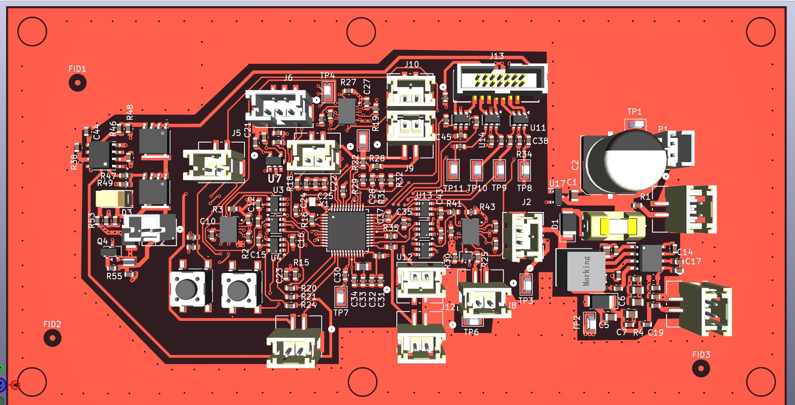

BOUNCE™ Hardware Architecture
The BOUNCE™ safety system operates on a low-latency, fault-tolerant embedded control system. Designed from the ground up for high-speed tracking and critical deployment execution, the hardware balances sensitive micro-volt telemetry paths with high-reliability triggering loops.

Figure 2.0: 3D engineering assembly layout of the BOUNCE™ controller board, featuring centralized processing and high-reliability connection points.
Firmware Telemetry & Execution Flowchart
To elite hardware engineers and technical reviewers: This is how the system processes signal data, implements its fault-tolerant voting architecture, and locks down deployment commands within microsecond thresholds.
STM32 ARM Cortex Logic Core
Does Kinematic Drop Telemetry exceed threshold across 2-of-3 independent paths?
HIGH-RELIABILITY FIRING LOOP ACTUATION
System Execution Metrics
To safely intercept a human fall, calculations and hardware telemetry must execute within a fraction of a second. Below are the verified operational parameters of the architecture:
Telemetry Performance
- Sensor Sampling Rate: 1,600 Hz (1,600 calculations per second)
- Sensor Redundancy: Triple Modular Redundant (TMR) architecture
- Logic Processing: High-performance STM32 ARM Cortex core
- Trajectory Decision Speed: Within 15 milliseconds of fall onset
- Total System Response Time: Under 150 milliseconds
Pneumatic & Shield Deployment
- Stage 1 Activation: Vertical Stabilization Skirt (shields hips and pelvis)
- Stage 2 Activation: Horizontal Containment Bladders (shields upper torso, arms, head)
- Deployment Clearance: Initiates expansion roughly 6 inches prior to vertical impact threshold
Security Statement: BOUNCE™ Safety Systems LLC protects its intellectual property vigorously. The BOUNCE™ platform is provisionally patented. Detailed schematics, exact trace layouts, and proprietary firmware source files are maintained under strict hardware security protocols and are available exclusively to verified manufacturing partners and defense contractors under active NDA.